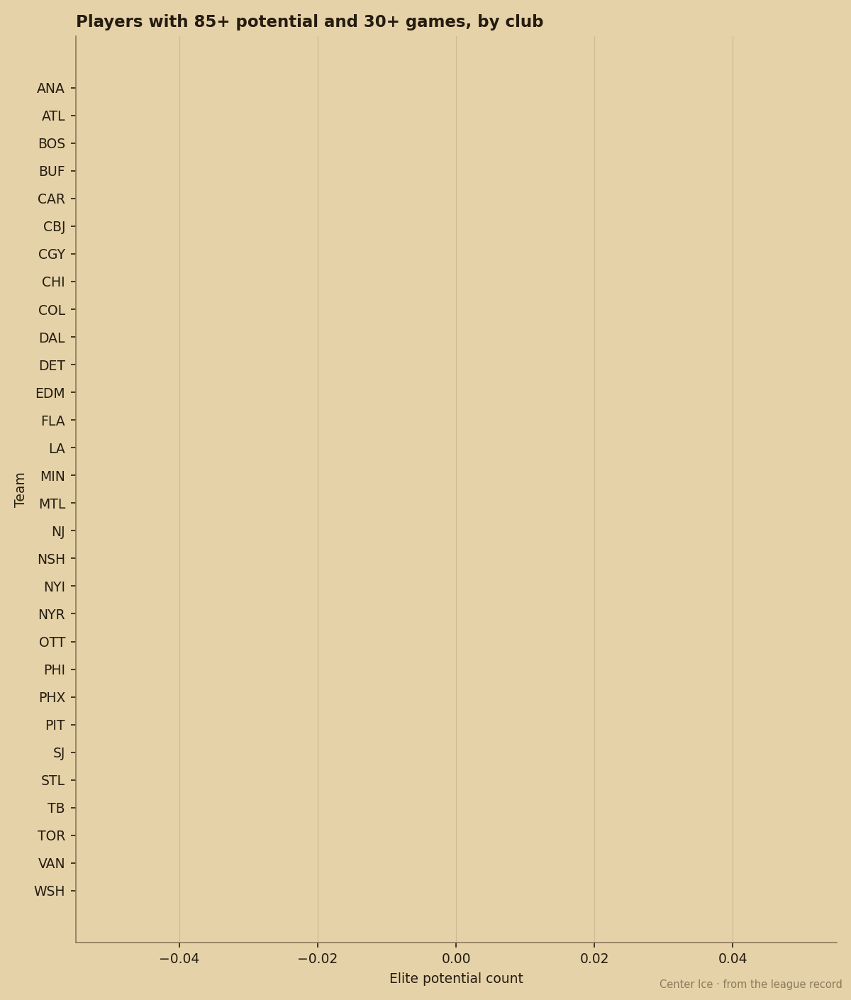
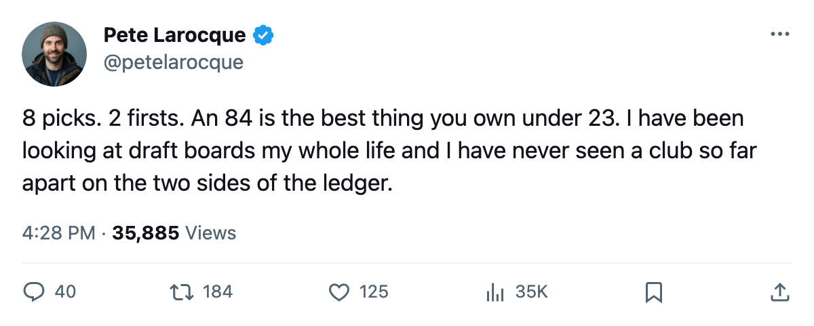
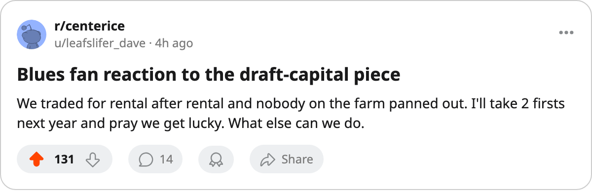

St. Louis Has 8 Picks. Their Best Player Under 23 Carries an 84 Overall.
Nobody in the league owns more June inventory. The Book says nobody with that much capital has worse young talent.
 Pete LarocqueScouting editor · The Prospect File
Pete LarocqueScouting editor · The Prospect FileSTL draft capital

The piece
St. Louis Blues holds 8 picks and 2 first-rounders for the 2005 draft. The rookie draft is 84 days away. The Book's highest grade on any St. Louis player under 23 reads 84.
That is the lowest number in the league among clubs carrying more than 5 picks.  Toronto Maple Leafs owns 1 pick, 0 first-rounders, and a 96 on their 23-year-old right wing.
Toronto Maple Leafs owns 1 pick, 0 first-rounders, and a 96 on their 23-year-old right wing.
Are picks a currency if the room they belong to has no one young enough to cash them in? The 8th-ranked team in the Central has 8 of them.
The capital-rich clubs and their young cores
Seven clubs hold 6 or more picks for June. The Book's best grade on a player under 23, by club:

| Club | Picks | Firsts | Best U-23 Overall | Standings (Pts) |
|---|---|---|---|---|
| St. Louis Blues | 8 | 2 | 84 | 69 |
| New York Rangers | 6 | 1 | 85 | 76 |
 New York Islanders New York Islanders | 6 | 1 | 85 | 70 |
| Pittsburgh Penguins | 6 | 1 | 85 | 70 |
 Florida Panthers Florida Panthers | 6 | 1 | 87 | 70 |
 Detroit Red Wings Detroit Red Wings | 6 | 2 | 93 | 81 |
 Washington Capitals Washington Capitals | 7 | 1 | 93 | 89 |
Detroit and Washington carry 6 and 7 picks respectively and sit at 93. The rest of the group sits between 84 and 87. St. Louis is at the bottom by 1 full point, and has 2 more picks than anyone else.
What St. Louis actually picked last June
The only 2004 first-rounder on the St. Louis Blues roster is Vladimir Kloucek70 [1001059], taken 8th overall. He is 19, has played 57 games, and carries 3 points in 11.4 minutes a night. The Book gives him a 64 overall and a 67 potential, the lowest potential attached to any player from the 2004 first round who has played more than 50 games.
Tuomas Lydman74, the 10th pick, has 65 games and a 52 potential. He is worse. But Lydman has 26 points. Kloucek has 3.
St. Louis's extra picks come from three separate trades: LA's selection in the 1st round, Calgary's in the 2nd, Vancouver's in the 4th. Each was presumably a cost for a veteran rental or a cap dump. None produced a player who has logged more than 30 games in a St. Louis sweater.
The other end of the table
Toronto Maple Leafs finished last in picks held (1) and sits atop the Book's U-23 rankings with a 96 on  Marian Gaborik98 [308]. Four other Toronto players under 23 appear in the league's top 40 by overall:
Marian Gaborik98 [308]. Four other Toronto players under 23 appear in the league's top 40 by overall:  Rick Nash83 [364] at 81,
Rick Nash83 [364] at 81,  Rostislav Klesla84 [491] at 82,
Rostislav Klesla84 [491] at 82,  Stanislav Chistov82 [518] at 80, Steve Eminger77 [699] at 75. They have no first-round picks this June, and they drafted those players three and four years ago and kept them.
Stanislav Chistov82 [518] at 80, Steve Eminger77 [699] at 75. They have no first-round picks this June, and they drafted those players three and four years ago and kept them.
Inventory without infrastructure
Eight picks means eight chances to hit. A 67 potential on your best first-rounder's development track says the last one did not land. The 2004 class at St. Louis has 1 player who has played more than 30 games (Kloucek, 57) and 1 who has played at all (Marcel Ondruska64 [1001027], 29 games, 7 points, a 74 potential).
The draft board is the tool. Picks are the fuel.
St. Louis sits 69 points in the Central, 25 back of Nashville, in a dead-last tie with no one (they are 4th of 5). They have the inventory. They have 84 days to decide whether they are accumulating for a plan or collecting because nobody told them to stop.

